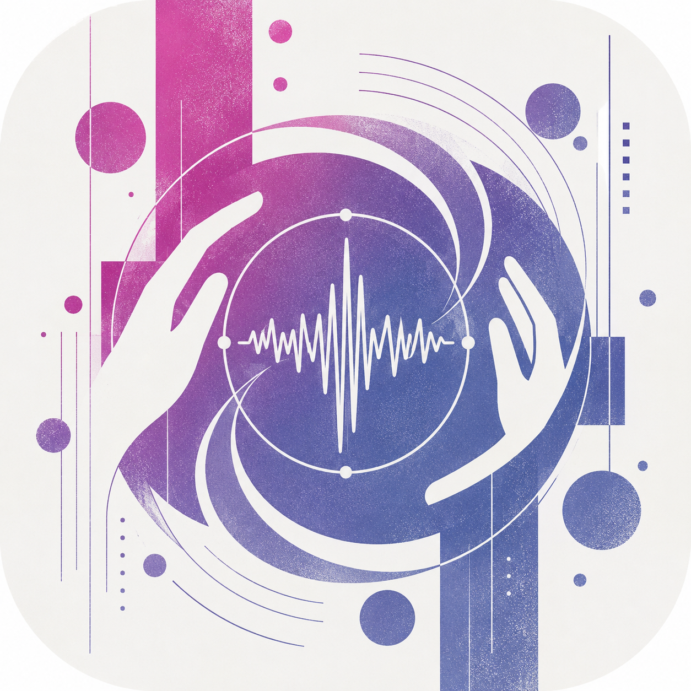

保存しました

CP
ChronoPlot
Story Architecture Studio
新しい物語を作成
物語プロジェクト一覧
フォルダを選択してプロット編集を開始します（自動保存対応）
0 PROJECTS
ホーム
PROJECT
無題の物語
感情グラフ
設定
移動
複数選択
解除
戻す
やり直し
番号整列
100%
視点リセット
1枚目の付箋をタップしてください（同じ種類同士のみ接続可能）
終了
エモーションレベル推移
総合
単体
大筋
新しい物語を作成
物語タイトル
概要・メモ
キャンセル
保存する
付箋の内容を編集
番号（時系列・順）
対象
タイトル / 見出し
詳細メモ
エモーションレベル
0
-10 (絶望/下降)
0
+10 (高揚/頂点)
キャンセル
更新する
解説